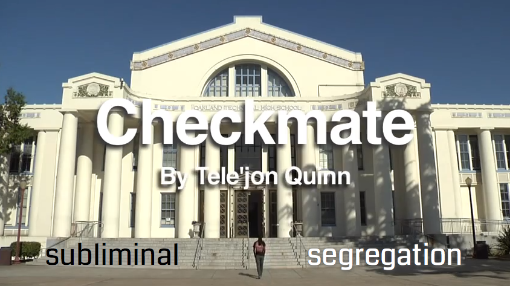

Home
Hi! my name is Amy.
This website displays my work at BAVC's F/C/R
(Film/Code/Remix) class.
80s Drug PSA's Remix
DESCRIPTION:
This nostalgic video is for all the children of the 80s and 90s who spent their childhood in front of the TV, where 80s PSAs were mostly about crack/cocaine that ran into the 90s. Many famous celebrities talked about drugs, but were their associations with drugs in PSAs positive or negative to impressionable young children? You decide.
FAIR USE NOTICE:
This critical and transformative remix work constitutes a fair use of any copyrighted material as provided for in section 107 of the US copyright law. "PSA for THE 80s Drug" was remixed by Amy Li and is licensed under a Creative Commons BY-NC-SA 3.0 License permitting non-commercial sharing and remixing with attribution.
SOURCES:
found via search terms "80s PSA" and "80s Drug PSAs":
"The Thrill Can Kill" PSAs, "Drugs,Drugs,Drugs" by Children Advertisers, R.A.D. PSAs and Partnership for a Drug Free America
Check Make w/ Popcorn Maker
DESCRIPTION:
Pop up overlay key words of the video Checkmate (by Tele'jon Quinn) using Popcorn Maker to high light and support the video's message. View Video
"Checkmate Directed by Lily Yu, Jasmine Ehrhardt, and Stephanie Hoang. This visual interpretation of a spoken word piece explores the struggle of a student facing the decision to drop out or stay in school. Made in partnership with KQED as part of The American Graduates program. 4 minutes."